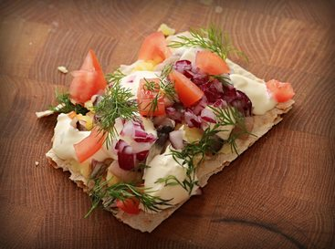

Swedish Bullshit Recipe

The Swedes have developed a recipe based on one of their most interesting ingredients. Fermented (demented) fish!!!!
Ingredients
- Flat bread
- Butter
- Surstromming
- Freshly boiled and sliced almond potato
- Chopped onion (yellow or red)
- Tomato
- Fresh Dill
- Butter the bread with room tempererad butter
- Slice the varm potatoes and put it on the bread, melting the butter
- Cut small pieces of the filleted herring and sprinkle it on top of the potatoes
- Top the bread with onion, tomatoes and fresh dill
- Some like to add some sour creme or Västerbotten cheese
Go Back